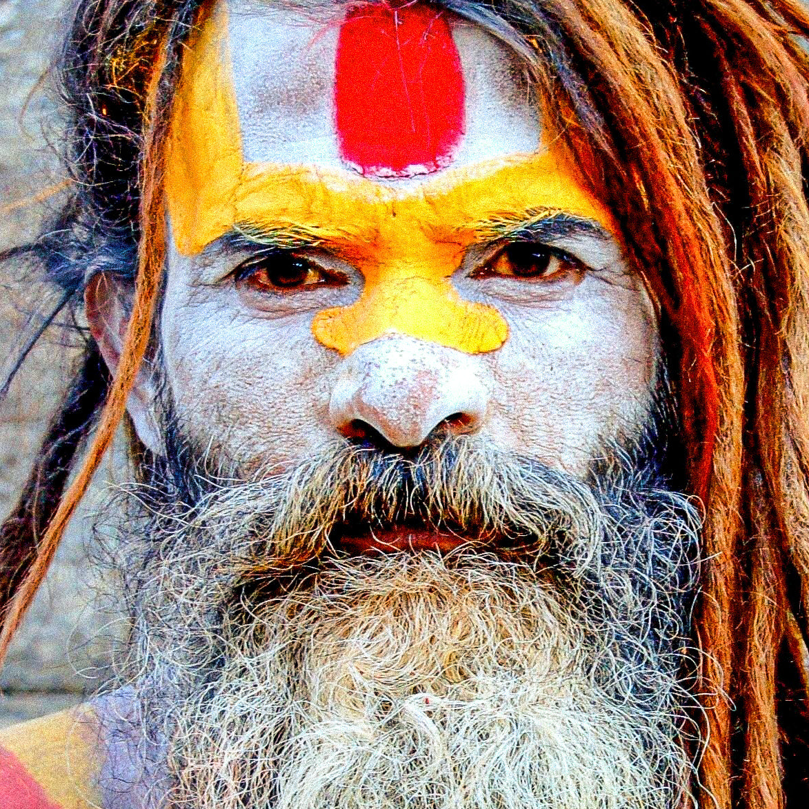
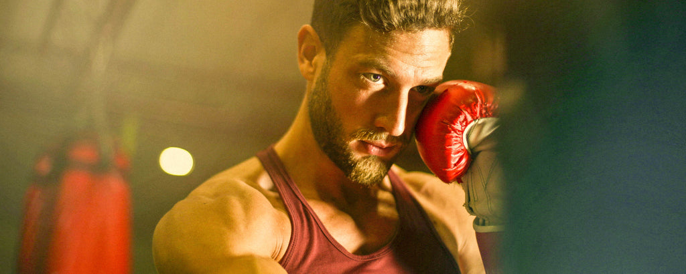

Pellicules de barbe : causes, symptômes et traitements

Si vous avez des pellicules de barbe, vous n'êtes pas seul. Cette affection courante peut être causée par divers facteurs, notamment la peau sèche, les infections fongiques et une mauvaise hygiène. Dans cet article, nous allons explorer les causes et les symptômes des pellicules de barbe, ainsi que certaines options de traitement efficaces.

Causes des pellicules de barbe
Les pellicules de barbe peuvent être causées par une variété de facteurs, notamment :- Peau sèche : si votre peau est sèche, cela peut entraîner des pellicules et des pellicules dans votre barbe. Il est important de bien hydrater votre peau ! Même celle sous la barbe.
- Infections fongiques : Les levures et autres champignons peuvent causer des pellicules de barbe et des irritations cutanées.
- Mauvaise hygiène : Ne pas laver votre barbe régulièrement peut entraîner une accumulation d'huile et de cellules mortes de la peau, ce qui peut provoquer des pellicules.
Symptômes des pellicules de barbe
Les symptômes les plus courants des pellicules de barbe incluent :- Flocons blancs ou jaunes dans votre barbe
- Démangeaisons ou irritations dans votre barbe ou sur votre visage
- Rougeur ou inflammation de la barbe ou du visage
Options de traitement pour les pellicules de barbe
Il existe plusieurs options de traitement efficaces pour les pellicules de barbe, notamment :
- Utiliser un shampooing médicamenteux conçu pour les pellicules
- Appliquer une crème hydratante ou une huile à barbe sur votre barbe. En effet il est important d'hydrater donc c'est pour cela que notre Huile Mastel qui contient de l'Acide Hyaluronique est parfaite. De plus elle contient un actif special qui répare la peau pour enlever les pellicules.
- Éviter les savons durs et l'eau chaude lors du lavage de votre barbe
- Manger sainement et rester hydraté pour favoriser une peau saine
Pour conclure, si vous avez des pellicules de barbe, il est important de prendre des mesures pour traiter la maladie et l'empêcher de se reproduire. En suivant les conseils et les options de traitement, vous pouvez garder votre barbe et votre peau saines et sans pellicules.